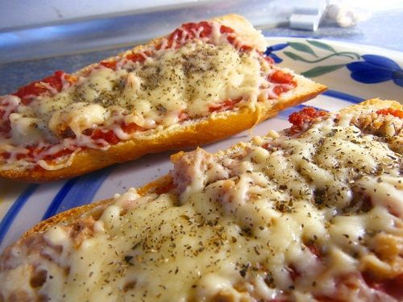

Panini de atún

- Preparación:10 minutos
- Tipo de receta: refrigerio
- Dificultad baja
Descripción:
El panini de atun es una especie de pizza hecha sobre una barra de pan.
Es una receta de cocina muy fácil de hacer y que la tendrás lista en menos de 10 minutos.
Ingredientes:
- 1/4 de una barra de pan
- 50g de un queso que se deshaga fácilmente. Como queso mozzarella
- Dos cucharadas de salsa de tomate
- Unos 200g de atún en conserva.
- orégano seco, para espolvorear por encima
Preparación:
- Cortamos 1/4 parte de una barra de pan y después, cortamos este trozo por la mitad, longitudinalmente.
Con cada media parte, tendremos un panino (así conocido en singular)
- Con la mano, retiramos el exceso de miga y ponemos una cucharada de una salsa de tomate como base a cada pan
- Después ponemos el atún encima. Puedes y te recomiendo colocar algo del aceite que viene junto a la conserva pero, tampoco añadas demasiado o quedará demasiado graso.
Añadimos finalmente el queso encima y los metemos al horno, previamente calentado a 200ºC, durante unos 5 minutos.
- Pasado el tiempo, el queso estará deshecho y el pan muy crujiente, espolvoreamos con orégano seco. ¡Listo para comer!
Es mejor espolvorear el orégano después de sacar del horno, porque si no es muy probable que se queme. Las hierbas secas, son muy delicadas al calor.
¡Prueba a hacer este panini de atun y verás como lo repites!
¡Buen Provecho!